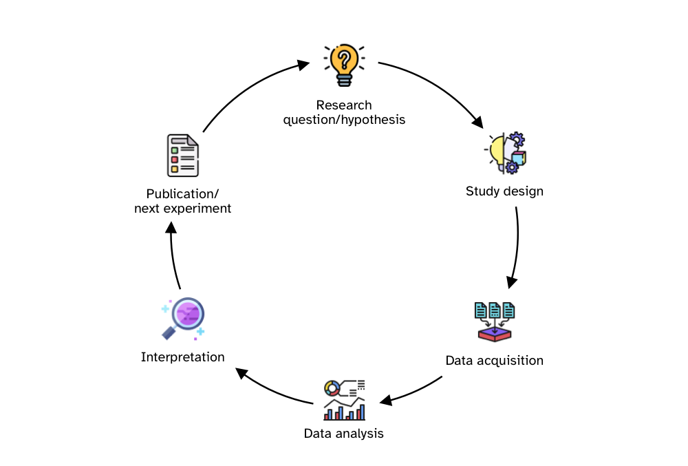

QML - Week 3
The research cycle and questionable research practices
1 The Research Cycle

2 Questionable Research Practices (QRPs)
3
5
7 Peer-review for better or worse?
8 Registered Reports

9 References
Bruce, Rachel, Anthony Chauvin, Ludovic Trinquart, Philippe Ravaud, and Isabelle Boutron. 2016. “Impact of Interventions to Improve the Quality of Peer Review of Biomedical Journals: A Systematic Review and Meta-Analysis.” BMC Medicine 14 (1): 85. https://doi.org/10.1186/s12916-016-0631-5.
Garcia-Costa, Daniel, Anabel Forte, Emilia Lòpez-Iñesta, Flaminio Squazzoni, and Francisco Grimaldo. 2022. “Does Peer Review Improve the Statistical Content of Manuscripts? A Study on 27 467 Submissions to Four Journals.” Royal Society Open Science 9 (9): 210681. https://doi.org/10.1098/rsos.210681.
Jefferson, Tom, Philip Alderson, Elizabeth Wager, and Frank Davidoff. 2002. “Effects of Editorial Peer Review: A Systematic Review.” JAMA 287 (21): 2784. https://doi.org/10.1001/jama.287.21.2784.
Jefferson, Tom, Melanie Rudin, Suzanne Brodney Folse, and Frank Davidoff. 2007. “Editorial Peer Review for Improving the Quality of Reports of Biomedical Studies.” Edited by Cochrane Methodology Review Group. Cochrane Database of Systematic Reviews 2010 (1). https://doi.org/10.1002/14651858.MR000016.pub3.
Smith, Richard. 2006. “Peer Review: A Flawed Process at the Heart of Science and Journals.” Journal of the Royal Society of Medicine 99 (4): 178–82. https://doi.org/10.1177/014107680609900414.
Stephen, Dimity. 2022. “Peer Reviewers Equally Critique Theory, Method, and Writing, with Limited Effect on the Final Content of Accepted Manuscripts.” Scientometrics 127 (6): 3413–35. https://doi.org/10.1007/s11192-022-04357-y.
White, C. 2003. “Little Evidence for Effectiveness of Scientific Peer Review.” BMJ 326 (7383): 241a–241. https://doi.org/10.1136/bmj.326.7383.241/a.